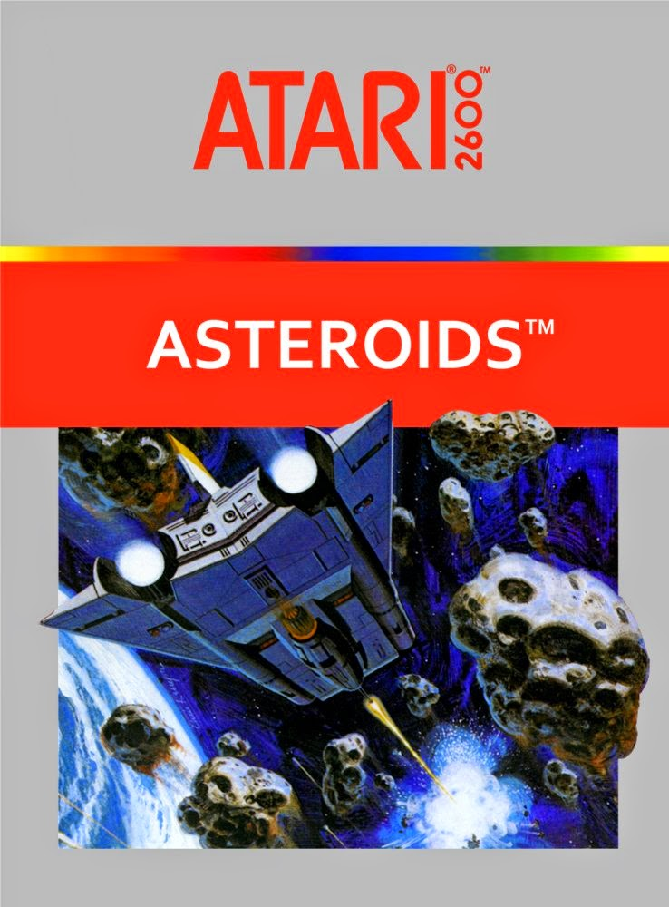

O Atari 2600 , lançado em 1977 nos Estados Unidos e em 1983 no Brasil, é um dos consoles mais emblemáticos da história dos videogames. Conhecido inicialmente como Projeto Stella, o Atari 2600 foi pioneiro ao introduzir o uso de cartuchos intercambiáveis, permitindo aos jogadores uma vasta biblioteca de jogos e inaugurando uma nova era no entretenimento eletrônico.
Entre os jogos mais marcantes do console estão Adventure, o primeiro a conter um easter egg; Kaboom!, que desafiava os jogadores a capturar bombas; River Raid, com sua jogabilidade inovadora; Asteroids, onde o jogador destrói asteroides; Pitfall!, uma aventura de plataforma; Enduro, um jogo de corrida com mudanças de dia para noite; e Pac-Man, a versão do famoso jogo de arcade que foi um sucesso de vendas e Space Ivanders onde o jogador derrotava alienígenas.
|  | |
||
O Atari 2600 era equipado com um processador 6507 de 8 bits operando a 1,19 MHz, 128 bytes de RAM, e suportava cartuchos de ROM de até 4 kB. A resolução de vídeo era de 160x192 pixels, com uma paleta de 128 cores, e o áudio era gerado por dois canais, cada um com seu próprio chip.
No entanto, a Atari enfrentou desafios significativos que levaram ao seu declínio. A competição acirrada, a saturação do mercado de consoles, a qualidade irregular dos jogos e decisões estratégicas questionáveis impactaram negativamente a empresa. A crise do videogame de 1983 afetou profundamente a indústria, causando uma queda significativa nas vendas. A aquisição pela Warner Communications em 1976 e as dificuldades financeiras após a crise de 1984 levaram ao encerramento da empresa
Apesar do declínio, o legado do Atari 2600 permanece forte. Foram lançados 556 jogos colecionáveis em cartuchos, e o console foi descontinuado em 1992. Em 2017, a Tectoy lançou o Atari Flashback 7, uma versão com 101 jogos na memória. Mais recentemente, a Atari lançou o Atari 2600+, uma recriação moderna do console que aceita cartuchos originais.
O Atari 2600 teve várias versões e modelos, incluindo o Atari 2600 Original, o Atari 2800 japonês, o Atari 2600 Jr., o Dynavision, o Coleco Gemini, o Onyx Junior, o Atari Flashback e o Atari Flashback Portátil. Cada um desses modelos contribuiu para a rica história do Atari 2600 e para o desenvolvimento da indústria de videogames como a conhecemos hoje.